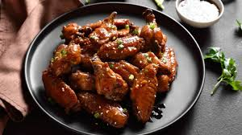

RASPBERRY BALSAMIC BAKED CHICKEN WINGS

Raspberry Balsamic Baked Chicken Wings Recipe
Raspberry balsamic baked chicken wings are a delightful twist on traditional chicken wings, combining sweet and tangy flavors with a hint of savory notes.
INGREDIENTS NEEDED FOR RASPBERRY BALSAMIC BAKED CHICKEN WINGS
- 1.5 lbs chicken wings and drumettes
- Parmesan Cheese
- Salt and Pepper
- 2 Tbsp cornstarch
- 1/4 cup balsamic vinegar
- 1/2 cup raspberry jam
- 1/4 cup water
- 1 tsp freshly grated ginger
- 1/2 Tbsp soy sauce
- 2 Tbsp butter
- 1 green onion, thinly sliced
STEPS
- Preheat the oven to 400ºF. Line a baking sheet with foil for easy clean up. Lay two wire racks over the foil to elevate the chicken pieces. Spritz the wire racks with oil for easy clean up, if desired.
- Pat the chicken pieces dry with paper towel, then season them with a pinch of salt and pepper. Place the chicken pieces in a bowl and dust with cornstarch. Toss the chicken in the cornstarch until they are fully and evenly coated. Arrange the coated chicken pieces on the prepared baking sheet so they are not touching.
- Bake the chicken in the preheated oven for 45-50 minutes, or until the chicken is golden brown and crispy.
- While the chicken is in the oven, prepare the raspberry balsamic sauce. Place the balsamic vinegar, raspberry jam, water, soy sauce, and ginger in a small sauce pot. Place the pot over medium-low heat and whisk the ingredients together until dissolved. Allow the sauce to come up to a boil, then boil for five minutes, whisking often, or until the mixture is thick an syrupy. Remove the sauce from the heat, then stir in the butter. Allow the sauce to cool (it will thicken further as it cools).
- When the chicken is finished baking, place the pieces in a large clean bowl. Pour the sauce over top, and add the sliced green onion. Toss the chicken until it is fully coated in sauce. Serve warm.
NUTRITION
- Serving: 4pieces
- Calories: 702.53kcal
- Carbohydrates: 46.83g
- Protein: 39.93g
- Fat: 36.37g
- Sodium: 674.33mg
- Fiber: 0.2g